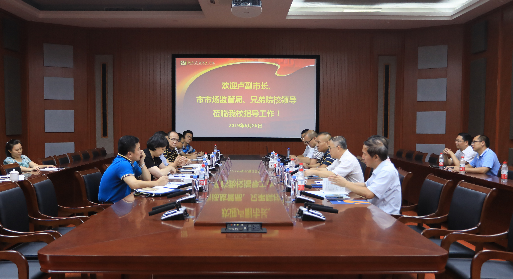
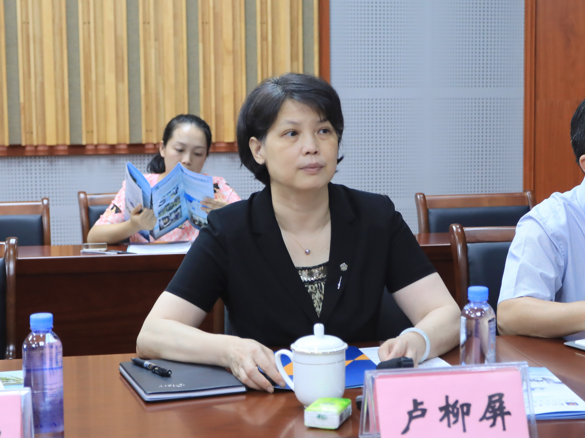
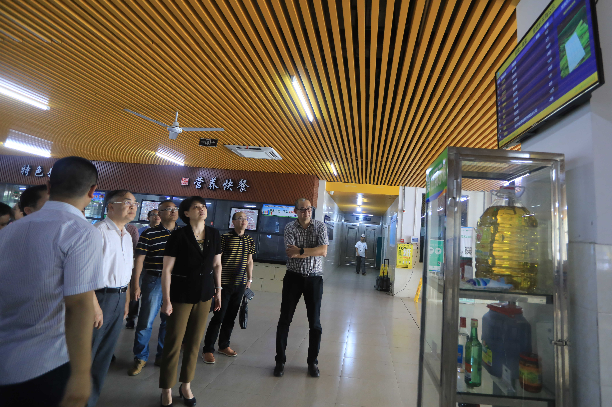
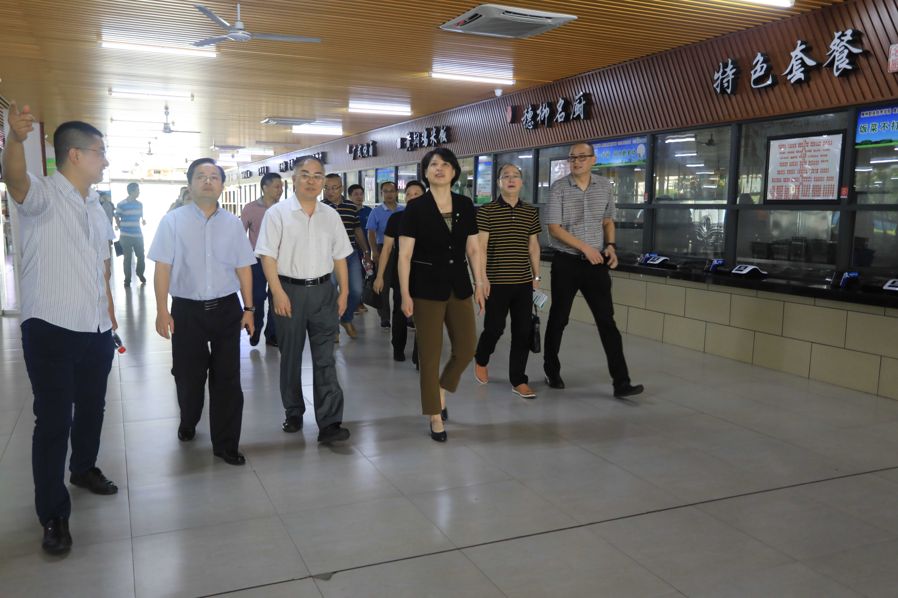

来源: 发布时间：2019-07-01 23:55:51 浏览次数： 262 次 【字体： 小 大】
新闻网消息 （文/后勤与资产管理处 胡慕贤 图/党委宣传部 朱敬民）2019年6月 26日下午，柳州市副市长卢柳屏、市场监管局局长蒋为民、教育局调研员 段安源、市场监管局副局长黄培昌以及柳州铁道职业技术学院院长黄锋、柳州城市职业技 术学院副院长张益德一行，到我校调研指导食堂安全管理工作。我校党委书记朱伟才、副 校长瞿凡，后勤与资产管理处处长邓亮顺、副处长刘恒及相关工作人员陪同调研。
卢柳屏一行来到我校官塘校区食堂一楼，参观了我校食品安全信息化管理平台在 实际食品安全监管工作中的运行情况。我校后勤与资产管理处副处长刘恒、食品 安全专职监管员韦萌向来访的领导介绍了管理软件在各操作间的检查细项和操作 办法，演示了作为食堂经营方主体在备餐过程中按照国家相关法律法规操作的方 法和步骤。
随后，卢柳屏一行来到我校官塘校区T1-D201会议室，听取我校食品安全信息化管 理工作汇报。刘恒从校食品安全主体责任落实、食品安全管理体系建设、食品安 全信息化管理体系建设、食堂图形化色标管理体系建设和食堂改造实施等5个方 面汇报我校落实餐饮安全长效机制工作。
朱伟才作讲话。他首先感谢卢柳屏一行到我校检查指导食品安全管理工作，指出 ，上级领导对我校此项工作的重视极大地鞭策我们不断前进、不断完善现有监 管平台。接着，朱伟才介绍了2016年以来我校不断改善学生的住宿条件、就餐条 件的情况，他说，学校高度重视食品安全工作，成立了校级食品安全工作领导小组 ，配备了管理人员，责任落实到位、资金配备到位，在后勤服务管理工作中充分利 用大数据，不仅提高了后勤服务监管工作效率，还使监管工作“上档次”。 朱 伟才强调，所有这些工作，都为了让学生有一种“来柳州职业技术学院学习，不虚 此行”的认同感和获得感，让教师们有一种在柳职工作的幸福感。

卢柳屏一行到我校调研指导食堂安全管理工作

柳州市副市长卢柳屏听取汇报


巡查我校食堂